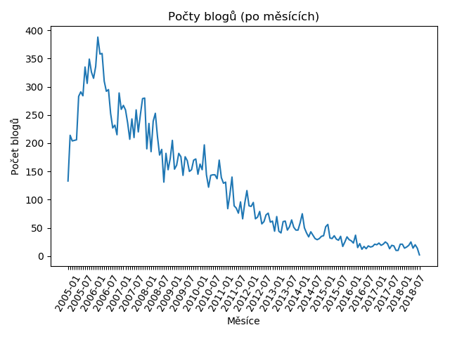

Poslední dobou se tu řešilo, jestli abíčko umírá, neumírá, zemřelo, nebo snad prosperuje, jenom jinak. Provedl jsem analýzu blogů, tak se všichni můžeme podívat na tvrdá data a udělat si závěry sami.
Analýza zkoumala počty přispěvatelů za rok a za měsíc, jak co se týče počtu blogů, tak co se týče počtu komentářů, a to zvlášť jak registrovaných, tak i neregistrovaných uživatelů.
Výsledný trend je bohužel docela jasný:

Script pro generování grafů a datasetů je možné najít v repozitáři mých blogů:
Návrhy? Zkusíme to tu zachránit? Fork? Přechod někam jinam? Podělte se v diskuzi.